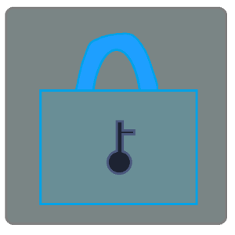

AutoBackup
AutoBackupは、自動でマイクラ統合版のワールドのバックアップを取ることができるソフトです。 特定のフォルダだけのバックアップをとることもできます。

AutoBackupは、自動でマイクラ統合版のワールドのバックアップを取ることができるソフトです。 特定のフォルダだけのバックアップをとることもできます。
WaterSkeletonは、GreyHackというゲームのチートです。 半自動で大量にお金稼ぎできます。ボタンをクリックして、放置するだけ！
YUUKIは、Discordの民主政治サポートBOTです。 Discordサーバーの管理を完全に民主化することができます。
MIRAIは、Discordのサーバー管理支援BOTです。 独自の高度な認証システムで安全な運用が可能です。 プライバシーも完全に保護されています。
KOKONEは、Discordの音楽BOTです。 YouTubeとSpotifyの音楽を再生することができます。 URL,検索ワード,プレイリストの再生に対応しています。 音量の調整や、ループ再生や、キューに登録などの一般的な機能は全て備えています。